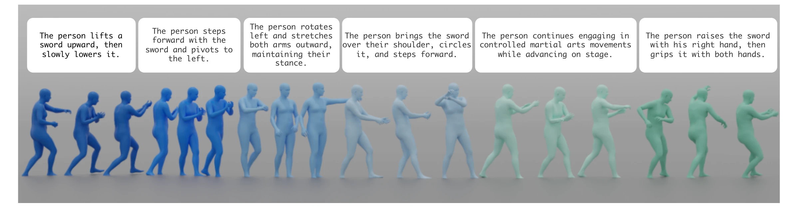
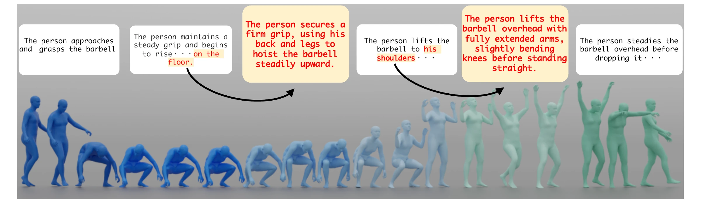
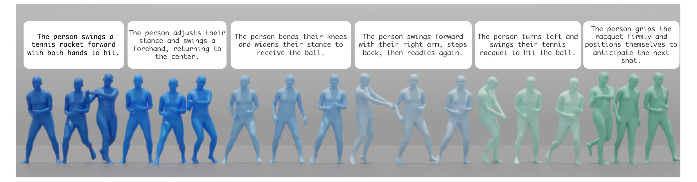

ELMA: Benchmarking Anaphoric Compositions for Long-Term Text-to-Motion Generation
1 Keio University 2 Keio AI Center 3 Sony Group Corporation
Abstract
Text-guided long-term human motion generation is essential for applications such as continuously operating digital avatars. Despite recent progress on short clips, existing models struggle with multi-segment instructions that involve anaphora, where constraints established in earlier segments must be preserved over time. In this paper, we introduce a novel task of long-term motion generation from such anaphoric compositions. To mitigate this, we present ELMA, an episodic long-term motion dataset with dense segment-level annotations that preserve cross-segment dependencies. Built via a fully automated collection and filtering pipeline, ELMA extracts high-quality, continuous 30-second clips from in-the-wild videos, capturing the episodic narratives necessary for long-range state modeling. Leveraging this dataset, we fine-tune state-of-the-art motion generation models to incorporate long-range context. Extensive experiments reveal fundamental shortcomings in current models when handling context-dependent instructions. We demonstrate that ELMA enables significant improvements in both global physical realism and semantic alignment, setting a robust new baseline for long-term motion synthesis.
Dataset



We introduce ELMA (Episodic Long-term Motion dataset with multi-segment Annotations), an episodic long-term 3D human motion dataset built from continuous 30-second clips with densely aligned segment-level captions that explicitly preserve and annotate anaphoric dependencies across segments. Unlike existing datasets that often lack temporal semantic coherence due to the aggregation of fragmented short clips or the synthesis of motion data using existing generative models, our approach leverages continuous in-the-wild RGB videos. We choose 30 seconds as a practical horizon that is long enough to exhibit cross-segment state persistence while remaining feasible for reliable tracking in unconstrained videos. By extracting uninterrupted 30-second sequences, ELMA naturally preserves the temporal semantic coherence and physical consistency of extended activities. These episodic clips provide the coherent context needed to capture long-range constraints, such as maintaining a hand pose while transitioning to locomotion or sustaining an object-holding state across segments.